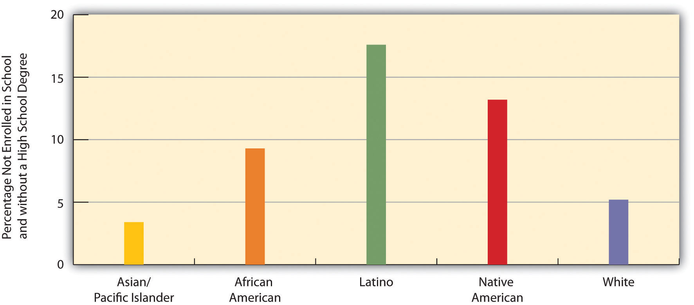
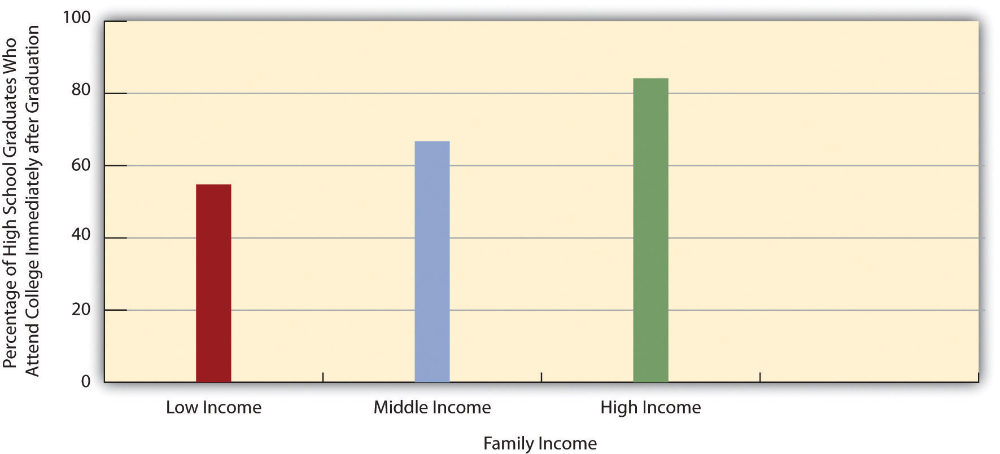
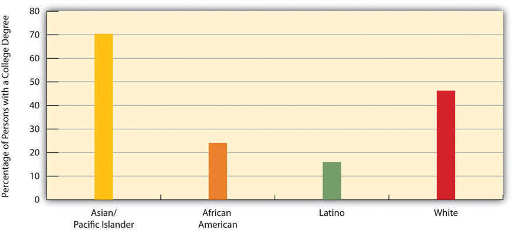
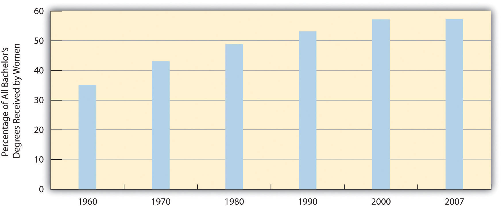
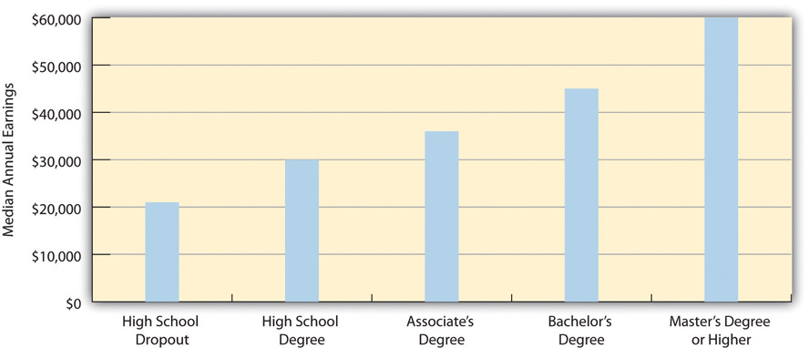

EducationThe social institution through which a society teaches its members the skills, knowledge, norms, and values they need to learn to become good, productive members of their society. is the social institution through which a society teaches its members the skills, knowledge, norms, and values they need to learn to become good, productive members of their society. As this definition makes clear, education is an important part of socialization. Education is both formal and informal. Formal educationLearning that occurs in schools under teachers, principals, and other specially trained professionals. is often referred to as schooling, and as this term implies, it occurs in schools under teachers, principals, and other specially trained professionals. Informal educationLearning that occurs outside the schools, traditionally in the home. may occur almost anywhere, but for young children it has traditionally occurred primarily in the home, with their parents as their instructors. Day care has become an increasingly popular venue in industrial societies for young children’s instruction, and education from the early years of life is thus more formal than it used to be.
Education in early America was only rarely formal. During the colonial period, the Puritans in what is now Massachusetts required parents to teach their children to read and also required larger towns to have an elementary school, where children learned reading, writing, and religion. In general, though, schooling was not required in the colonies, and only about 10 percent of colonial children, usually just the wealthiest, went to school, although others became apprentices (Urban & Wagoner, 2008).Urban, W. J., & Wagoner, J. L., Jr. (2008). American education: A history (4th ed.). New York, NY: Routledge.
To help unify the nation after the Revolutionary War, textbooks were written to standardize spelling and pronunciation and to instill patriotism and religious beliefs in students. At the same time, these textbooks included negative stereotypes of Native Americans and certain immigrant groups. The children going to school continued primarily to be those from wealthy families. By the mid-1800s, a call for free, compulsory education had begun, and compulsory education became widespread by the end of the century. This was an important development, as children from all social classes could now receive a free, formal education. Compulsory education was intended to further national unity and to teach immigrants “American” values. It also arose because of industrialization, as an industrial economy demanded reading, writing, and math skills much more than an agricultural economy had.
Free, compulsory education, of course, applied only to primary and secondary schools. Until the mid-1900s, very few people went to college, and those who did typically came from fairly wealthy families. After World War II, however, college enrollments soared, and today more people are attending college than ever before, even though college attendance is still related to social class, as we shall discuss shortly.
An important theme emerges from this brief history: Until very recently in the record of history, formal schooling was restricted to wealthy males. This means that boys who were not white and rich were excluded from formal schooling, as were virtually all girls, whose education was supposed to take place informally at home. Today, as we will see, race, ethnicity, social class, and, to some extent, gender continue to affect both educational achievement and the amount of learning occurring in schools.

In colonial America, only about 10 percent of children went to school, and these children tended to come from wealthy families. After the Revolutionary War, new textbooks helped standardize spelling and pronunciation and promote patriotism and religious beliefs, but these textbooks also included negative stereotypes of Native Americans.
Image courtesy of Joel Dorman Steele and Esther Baker Steele, http://commons.wikimedia.org/wiki/File:Spinninginthecolonialkitchen.jpg.
Education in the United States is a massive social institution involving millions of people and billions of dollars. More than 75 million people, almost one-fourth of the US population, attend school at all levels. This number includes 40 million in grades pre-K through eighth grade, 16 million in high school, and 20 million in college (including graduate and professional school). They attend some 132,000 elementary and secondary schools and about 4,200 two-year and four-year colleges and universities and are taught by about 4.8 million teachers and professors (US Census Bureau, 2012).US Census Bureau. (2012). Statistical abstract of the United States: 2012. Washington, DC: US Government Printing Office. Retrieved from http://www.census.gov/compendia/statab.
About 65 percent of US high school graduates enroll in college the following fall. This is a very high figure by international standards, as college in many other industrial nations is reserved for the very small percentage of the population who pass rigorous entrance exams. They are the best of the brightest in their nations, whereas higher education in the United States is open to all who graduate high school. Even though that is true, our chances of achieving a college degree are greatly determined at birth, as social class and race and ethnicity substantially affect who goes to college. They affect whether students drop out of high school, in which case they do not go on to college; they affect the chances of getting good grades in school and good scores on college entrance exams; they affect whether a family can afford to send its children to college; and they affect the chances of staying in college and obtaining a degree versus dropping out. For all these reasons, educational attainmentHow far one gets in school, which has been shown to depend heavily on family income and race/ethnicity.—how far one gets in school—depends heavily on family income and race/ethnicity (Tavernise, 2012).Tavernise, S. (2012, February 10). Education gap grows between rich and poor, studies say. New York Times, p. A1. Family income, in fact, makes a much larger difference in educational attainment than it did during the 1960s.
Government data readily show the effects of family income and race/ethnicity on educational attainment. Let’s first look at how race and ethnicity affect the likelihood of dropping out of high school. Figure 11.1 "Race, Ethnicity, and High School Dropout Rate, Persons Ages 16–24, 2009 (Percentage Not Enrolled in School and without a High School Degree)" shows the percentage of people ages 16–24 who are not enrolled in school and who have not received a high school degree. The dropout rate is highest for Latinos and Native Americans and lowest for Asians and whites.
Figure 11.1 Race, Ethnicity, and High School Dropout Rate, Persons Ages 16–24, 2009 (Percentage Not Enrolled in School and without a High School Degree)
Source: Aud, S., Hussar, W., Kena, G., Bianco, K., Frohlich, L., Kemp, J., et al. (2011). The condition of education 2011. Washington, DC: National Center for Education Statistics.
Now let’s look at how family income affects the likelihood of attending college, a second benchmark of educational attainment. Figure 11.2 "Family Income and Percentage of High School Graduates Who Attend College Immediately after Graduation, 2009" shows the relationship between family income and the percentage of high school graduates who enroll in college immediately following graduation: Students from families in the highest income bracket are more likely than those in the lowest bracket to attend college. This “income gap” in college entry has become larger in recent decades (Bailey & Dynarski, 2011).Bailey, M. J., & Dynarski, S. (2011). Gains and gaps: Changing inequality in US college entry and completion. Ann Arbor, MI: Population Studies Center.
Figure 11.2 Family Income and Percentage of High School Graduates Who Attend College Immediately after Graduation, 2009
Source: Aud, S., Hussar, W., Kena, G., Bianco, K., Frohlich, L., Kemp, J., et al. (2011). The condition of education 2011. Washington, DC: National Center for Education Statistics.
Finally, let’s examine how race and ethnicity affect the likelihood of obtaining a college degree, a third benchmark of educational attainment. Figure 11.3 "Race, Ethnicity, and Percentage of Persons Ages 25 or Older with a Four-Year College Degree, 2010" shows the relationship between race/ethnicity and the percentage of persons 25 or older who have a bachelor’s or master’s degree. This relationship is quite strong, with African Americans and Latinos least likely to have a degree, and whites and especially Asians/Pacific Islanders most likely to have a degree.
Figure 11.3 Race, Ethnicity, and Percentage of Persons Ages 25 or Older with a Four-Year College Degree, 2010
Source: Aud, S., Hussar, W., Kena, G., Bianco, K., Frohlich, L., Kemp, J., et al. (2011). The condition of education 2011. Washington, DC: National Center for Education Statistics.
Why do African Americans and Latinos have lower educational attainment? Four factors are commonly cited: (a) the underfunded and otherwise inadequate schools that children in both groups often attend; (b) the higher poverty of their families and lower education of their parents that often leave children ill prepared for school even before they enter kindergarten; (c) racial discrimination; and (d) the fact that African American and Latino families are especially likely to live in very poor neighborhoods (Ballantine & Hammack, 2012; Yeung & Pfeiffer, 2009).Ballantine, J. H., & Hammack, F. M. (2012). The sociology of education: A systematic analysis (7th ed.). Upper Saddle River, NJ: Prentice Hall; Yeung, W.-J. J., & Pfeiffer, K. M. (2009). The black-white test score gap and early home environment. Social Science Research, 38(2), 412–437.
The last two factors, racial discrimination and residence in high-poverty neighborhoods, need additional explanation. At least three forms of racial discrimination impair educational attainment (Mickelson, 2003).Mickelson, R. A. (2003). When are racial disparities in education the result of racial discrimination? A social science perspective. Teachers College Record, 105, pp. 1052–1086. The first form involves tracking. As we discuss later, students tracked into vocational or general curricula tend to learn less and have lower educational attainment than those tracked into a faster-learning, academic curriculum. Because students of color are more likely to be tracked “down” rather than “up,” their school performance and educational attainment suffer.
The second form of racial discrimination involves school discipline. As we also discuss later, students of color are more likely than white students to be suspended, expelled, or otherwise disciplined for similar types of misbehavior. Because such discipline again reduces school performance and educational attainment, this form of discrimination helps explain the lower attainment of African American and Latino students.
The third form involves teachers’ expectations of students. As our later discussion of the symbolic interactionist perspective on education examines further, teachers’ expectations of students affect how much students learn. Research finds that teachers have lower expectations for their African American and Latino students, and that these expectations help to lower how much these students learn.
Turning to residence in high-poverty neighborhoods, it may be apparent that poor neighborhoods have lower educational attainment because they have inadequate schools, but poor neighborhoods matter for reasons beyond their schools’ quality (Kirk & Sampson, 2011; Wodtke, Harding, & Elwert, 2011).Kirk, D. S., & Sampson, R. J. (2011). Crime and the production of safe schools. In G. J. Duncan & R. J. Murnane (Eds.), Whither opportunity?: Rising inequality, schools, and children’s life chances (pp. 397–418). New York, NY: Russell Sage Foundation; Wodtke, G. T., Harding, D. J., & Elwert, F. (2011). Neighborhood effects in temporal perspective: The impact of long-term exposure to concentrated disadvantage on high school graduation. American Sociological Review, 76(5), 713–736. First, because many adults in these neighborhoods are high school dropouts and/or unemployed, children in these neighborhoods lack adult role models for educational attainment. Second, poor neighborhoods tend to be racially and ethnically segregated. Latino children in these neighborhoods are less likely to speak English well because they lack native English-speaking friends, and African American children are more likely to speak “black English” than conventional English; both language problems impede school success.
Third, poor neighborhoods have higher rates of violence and other deviant behaviors than wealthier neighborhoods. Children in these neighborhoods thus are more likely to experience high levels of stress, to engage in these behaviors themselves (which reduces their attention and commitment to their schooling), and to be victims of violence (which increases their stress and can impair their neurological development). Crime in these neighborhoods also tends to reduce teacher commitment and parental involvement in their children’s schooling. Finally, poor neighborhoods are more likely to have environmental problems such as air pollution and toxic levels of lead paint; these problems lead to asthma and other health problems among children (as well as adults), which impairs the children’s ability to learn and do well in school.
For all these reasons, then, children in poor neighborhoods are at much greater risk for lower educational attainment. As a recent study of this risk concluded, “Sustained exposure to disadvantaged neighborhoods…throughout the entire childhood life course has a devastating impact on the chances of graduating from high school” (Wodtke et al., 2011, p. 731).Wodtke, G. T., Harding, D. J., & Elwert, F. (2011). Neighborhood effects in temporal perspective: The impact of long-term exposure to concentrated disadvantage on high school graduation. American Sociological Review, 76(5), 713–736. If these neighborhoods are not improved, the study continued, “concentrated neighborhood poverty will likely continue to hamper the development of future generations of children” (Wodtke et al., 2011, p. 733).Wodtke, G. T., Harding, D. J., & Elwert, F. (2011). Neighborhood effects in temporal perspective: The impact of long-term exposure to concentrated disadvantage on high school graduation. American Sociological Review, 76(5), 713–736.
Gender also affects educational attainment. If we do not take age into account, slightly more men than women have a college degree: 30.3 percent of men and 29.6 percent of women. This difference reflects the fact that women were less likely than men in earlier generations to go to college. But today there is a gender difference in the other direction: Women now earn more than 57 percent of all bachelor’s degrees, up from just 35 percent in 1960 (see Figure 11.4 "Percentage of All Bachelor’s Degrees Received by Women, 1960–2009"). This difference reflects the fact that females are more likely than males to graduate high school, to attend college after high school graduation, and to obtain a degree after starting college (Bailey & Dynarski, 2011).Bailey, M. J., & Dynarski, S. (2011). Gains and gaps: Changing inequality in US college entry and completion. Ann Arbor, MI: Population Studies Center.
Figure 11.4 Percentage of All Bachelor’s Degrees Received by Women, 1960–2009
Source: Data from US Census Bureau. (2012). Statistical abstract of the United States: 2012. Washington, DC: US Government Printing Office. Retrieved from http://www.census.gov/compendia/statab.
Have you ever applied for a job that required a high school degree? Are you going to college in part because you realize you will need a college degree for a higher-paying job? As these questions imply, the United States is a credential societyA society in which higher education is seen as evidence of the attainment of the needed knowledge and skills for various kinds of jobs. (Collins, 1979).Collins, R. (1979). The credential society: An historical sociology of education and stratification. New York, NY: Academic Press. This means at least two things. First, a high school or college degree (or beyond) indicates that a person has acquired the needed knowledge and skills for various jobs. Second, a degree at some level is a requirement for most jobs. As you know full well, a college degree today is a virtual requirement for a decent-paying job. The ante has been upped considerably over the years: In earlier generations, a high school degree, if even that, was all that was needed, if only because so few people graduated from high school to begin with. With so many people graduating from high school today, a high school degree is not worth as much. Then too, today’s society increasingly requires skills and knowledge that only a college education brings.
A credential society also means that people with more formal education achieve higher incomes. Annual earnings are indeed much higher for people with more education (see Figure 11.5 "Educational Attainment and Median Annual Earnings, Ages 25–34, 2009"). As earlier chapters indicated, gender and race/ethnicity affect the payoff we get from our education, but education itself still makes a huge difference for our incomes.
Figure 11.5 Educational Attainment and Median Annual Earnings, Ages 25–34, 2009
Source: Aud, S., Hussar, W., Kena, G., Bianco, K., Frohlich, L., Kemp, J., et al. (2011). The condition of education 2011. Washington, DC: National Center for Education Statistics.
Beyond income, education also affects at what age people tend to die. Simply put, people with higher levels of education tend to die later in life, and those with lower levels tend to die earlier (Miech, Pampel, Kim, & Rogers, 2011).Miech, R., Pampel, F., Kim, J., & Rogers, R. G. (2011). Education and mortality: The role of widening and narrowing disparities. American Sociological Review, 76, 913–934. The reasons for this disparity are complex, but two reasons stand out. First, more highly educated people are less likely to smoke and engage in other unhealthy activities, and they are more likely to exercise and to engage in other healthy activities and also to eat healthy diets. Second, they have better access to high-quality health care.
The United States has many of the top colleges and universities and secondary schools in the world, and many of the top professors and teachers. In these respects, the US education system is “the best of systems.” But in other respects, it is “the worst of systems.” When we compare educational attainment in the United States to that in the world’s other democracies, the United States lags behind its international peers.
Differences in the educational systems of the world’s democracies make exact comparisons difficult, but one basic measure of educational attainment is the percentage of a nation’s population that has graduated high school. A widely cited comparison involves the industrial nations that are members of the Organisation for Economic Co-operation and Development (OECD). Of the twenty-eight nations for which OECD has high school graduation data, the United States ranks only twenty-first, with a graduation rate of 76 percent (Organisation for Economic Co-operation and Development, 2011).Organisation for Economic Co-operation and Development. (2011). How many students finish secondary education? Retrieved November 10, 2011, from http://www.oecd.org/dataoecd/62/3/48630687.pdf. In contrast, several nations, including Finland, Ireland, Norway, Portugal, Switzerland, and the United Kingdom have graduation rates of at least 90 percent. If we limit the comparison to the OECD nations that compose the world’s wealthy democracies (see Chapter 2 "Poverty") to which the United States is most appropriately compared, the United States ranks only thirteenth out of sixteen such nations.
OECD also collects and publishes data on proficiency in mathematics, reading, and science among 15-year-olds in its member nations (Organisation for Economic Co-operation and Development, 2010).Organisation for Economic Co-operation and Development. (2010). PISA 2009 results: What students know and can do—Student performance in reading, mathematics and science (Vol. 1). Paris, France: Author. In reading and science, the United States ranks only at the average for all OECD nations, while the US score for mathematics ranks below the OECD average. Compared to their counterparts in other industrial nations, then, American 15-year-olds are only average or below average for these three important areas of study. Taking into account high school graduation rates and these proficiency rankings, the United States is far from the world leader in the quality of education. The Note 11.8 "Lessons from Other Societies" box examines what the United States might learn from the sterling example of Finland’s education system.
Successful Schooling in Finland
Finland is widely regarded as having perhaps the top elementary and secondary education system in the world. Its model of education offers several important lessons for US education. As a recent analysis of Finland’s schools put it, “The country’s achievements in education have other nations doing their homework.”
To understand the lessons to be learned from Finland, we should go back several decades to the 1970s, when Finland’s education system was below par, with its students scoring below the international average in mathematics and science. Moreover, urban schools in Finland outranked rural schools, and wealthy students performed much better than low-income students. Today, Finnish students rank at the top in international testing, and low-income students do almost as well as wealthy students.
Finland’s education system ranks so highly today because it took several measures to improve its education system. First, and perhaps most important, Finland raised teachers’ salaries, required all teachers to have a three-year master’s degree, and paid all costs, including a living stipend, for the graduate education needed to achieve this degree. These changes helped to greatly increase the number of teachers, especially the number of highly qualified teachers, and Finland now has more teachers for every 1,000 residents than does the United States. Unlike the United States, teaching is considered a highly prestigious profession in Finland, and the application process to become a teacher is very competitive. The college graduates who apply for one of Finland’s eight graduate programs in teaching typically rank in the top 10 percent of their class, and only 5–15 percent of their applications are accepted. A leading Finnish educator observed, “It’s more difficult getting into teacher education than law or medicine.” In contrast, US students who become teachers tend to have lower SAT scores than those who enter other professions, they only need a four-year degree, and their average salaries are lower than other professionals with a similar level of education.
Second, Finland revamped its curriculum to emphasize critical thinking skills, reduced the importance of scores on standardized tests and then eliminated standardized testing altogether, and eliminated academic tracking before tenth grade. Unlike the United States, Finland no longer ranks students, teachers, or schools according to scores on standardized tests because these tests are no longer given.
Third, Finland built many more schools to enable the average school to have fewer students. Today the typical school has fewer than three hundred students, and class sizes are smaller than those found in the United States.
Fourth, Finland increased funding of its schools so that its schools are now well maintained and well equipped. Whereas many US schools are decrepit, Finnish schools are decidedly in good repair.
Finally, Finland provided free medical and dental care for children and their families and expanded other types of social services, including three years of paid maternity leave and subsidized day care, as the country realized that children’s health and home environment play critical roles in their educational achievement.
These and other changes helped propel Finland’s education system to a leading position among the world’s industrial nations. As the United States ponders how best to improve its own education system, it may have much to learn from Finland’s approach to how children should learn.
Sources: Abrams, 2011; Anderson, 2011; Eggers & Calegari, 2011; Hancock, 2011; Ravitch, 2012; Sahlberg, 2011Abrams, S. E. (2011, January 28). The children must play: What the United States could learn from Finland about education reform. The New Republic. Retrieved from http://www.tnr.com/article/politics/82329/education-reform-Finland-US; Anderson, J. (2011, December 13). From Finland, an intriguing school-reform model. New York Times, p. A33; Eggers, D., & Calegari, N. C. (2011, May 1). The high cost of low teacher salaries. New York Times, p. WK12; Hancock, L. (2011, September). Why are Finland’s schools successful? Smithsonian. Retrieved from http://www.smithsonianmag.com/people-places/Why-Are-Finlands-Schools-Successful.html?c=y&story=fullstory; Ravitch, D. (2012, March 8). Schools we can envy. The New York Review of Books. Retrieved from http://www.nybooks.com/articles/archives/2012/mar/08/schools-we-can-envy/; Sahlberg, P. (2011). Finnish lessons: What can the world learn from educational change in Finland? New York, NY: Teachers College Press.